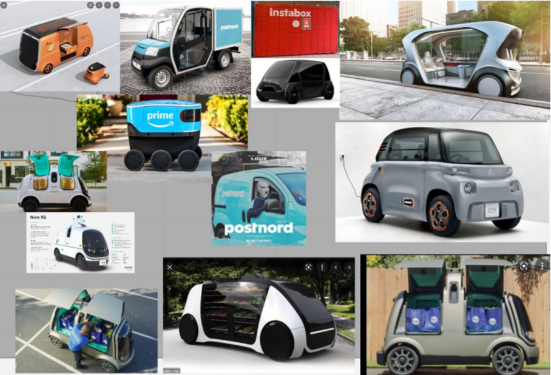
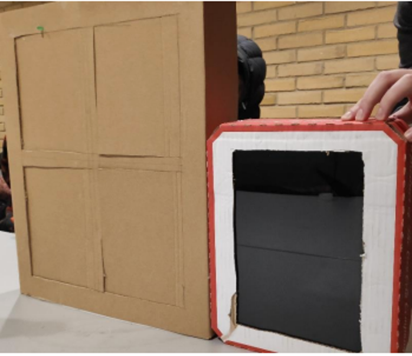
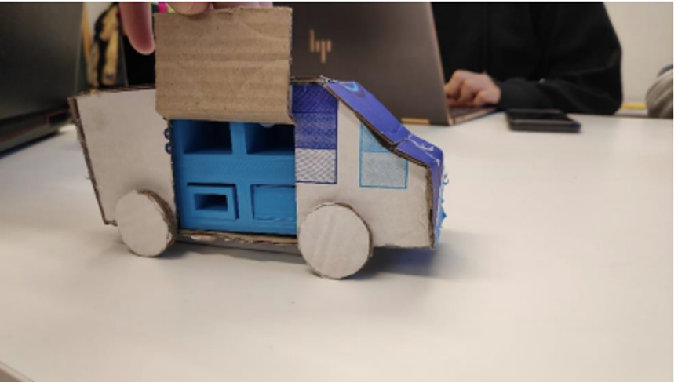
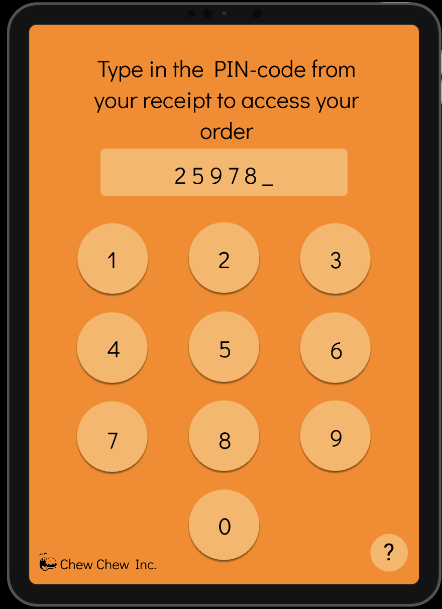
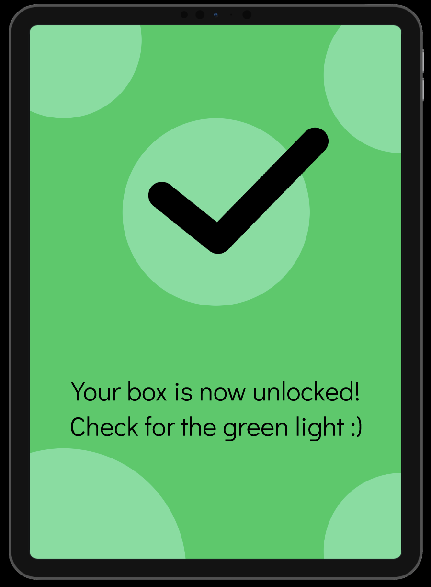
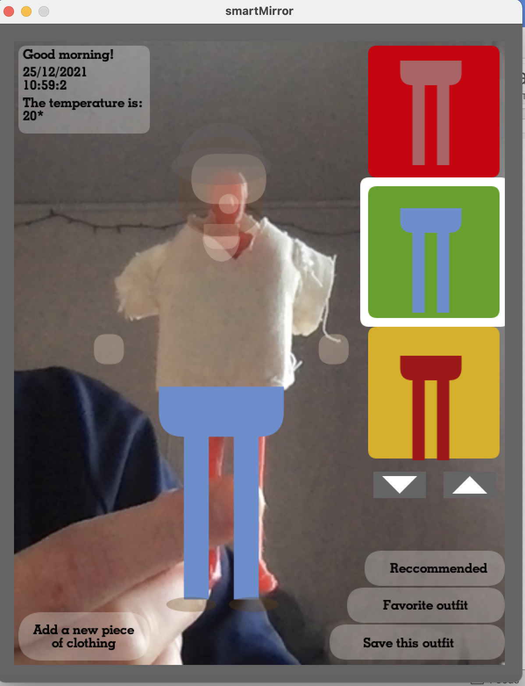
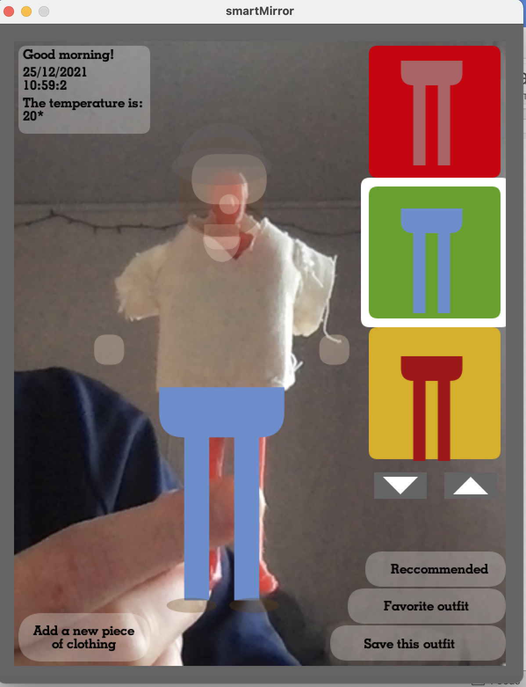

Portoflio Sweden: Umea University
- Home
- Portfolio
Psychology
Cognitive psychology and health psychology
At Umea University, I have followed two psychology courses. The first course I followed was called cognitive psychology. This is the branch of psychology that deals with cognition, which is all psychological processes that come
from our senses. How do we perceive signals? This is very important in the area of interaction technology, and therefore a useful addition to the regular courses. Topics that have been treated are: memory, perception and
attention, thinking, and language.
The second psychology course that I have followed is called health psychology. In this course, we have talked about psychological processes with regard to biological systems, epigenetics, sleep, and stress. This course can be of
use when designing health systems.
- Date: November 2021
- Purpose: Minor courses
- Category: Psychology
Prototype Interaction
Master course interaction design
AI food delivery service
Imagine ordering food online from a service that delivers food with AI cars.. You have ordered your favorite food. The delivery is estimated to take 20 minutes. The food arrives on time, but you notice that there is no one
delivering the food right outside your door. Instead you get a notification that a car is outside waiting for you to pick up your food. You go outside and you see that there is no one driving the car, the trunk is open with a
bunch of different boxes. You also see a touchscreen that is waiting for you to enter your code that you got in your phone from ordering. You enter the code, a light goes on up to your right and a lid opens. You take your food and
close the lid. The car closes the trunk and drives away, and you go inside and eat your favorite food.
In this course, various stages of design and prototypes are encountered throughout a project. The project started with brainstorming, followed by the Moscow method for solving the problem. A cardboard prototype in combination with
a 3D printed box is made, followed by a GUI prototype in Figma. The prototype is evaluated and discussed in a paper.





- Date: Februari 2022
- Purpose: Minor courses
- Category: Prototyping
Smart mirror
Prototyping
We currently live in a consumer society where people keep buying and buying new items without really considering what impact this can have on the environment or thinking how they can reduce/minimalize their buying. This is the same when it comes to clothing. Every piece of clothing someone buys, requires a lot of water and chemicals, which is often not recycled. Frequently people have way too many clothes, of which half of them they don’t even wear. Not only is this very unsustainable, but it can also result in personal issues when selecting clothes from your closet. You might not know anymore what you have in your closet and spend hours in front of your mirror selecting clothes.
To solve this problem, a prototype of a smart mirror in combination with smart tags on clothes is developed. The idea is that every piece of clothing has a small NFC tag knitted into the label, which can be scanned onto the mirror. The mirror knows all pieces of clothing that are available in your closet and can show you the options you can match a particular piece of clothing with. For example, you can scan a t-shirt, and it will show you various trousers you can combine it with. Besides that, the mirror will count how many times you have worn a piece of clothing and can suggest you to put away/donate certain clothes (for example, to a good cause). This way you can better keep track of what clothes you have (without digging through your whole closet) and think twice before buying new clothes.
There are also some other functions on the smart mirror, for example to ‘save outfits’, have favourite outfits (by lack of inspiration) and have recommended outfits. Recommended outfits are based on the temperature, which can be measured by a temperature sensor integrated into the smart mirror. The process of adding clothes is simple, you just scan the tag in front of the mirror and the mirror will guide you through the process of adding. This way it’s sustainable and you don’t have to buy ‘special clothes’, you can just add a tag into a label of an already existing piece of clothing.
The process of developing this prototype started with brainstorming with help of the moscow technique and a moodboard. After that, a 3D prototype was made of the miniature person and the mirror. E-textiles were knitted in the form of a t-shirt and pants, with an NFC tag integrated in the material. Next, the arduino setup with the RFID reader, temperature sensor and 2 LED’s were made. This is connected to the computer, which in turn sends data to the processing sketch. The processing sketch configures as ‘mirror’, since it uses the camera to see the 3D printed person, and interacts with what you scan on the mirror. Pictures of the development of the prototype are shown above. The interface on the computer is shown in the pictures below. On the left we see the process of finding an outfit, and on the bottom we see the different extra options, such as adding clothes, saving clothes, recommended clothes and favourite clothes.
The prototype is developed in line with the theory from the course Prototyping Interaction, please see the full essay for more deatils.

 

- Date: December 2019
- Purpose: Project Physical Computing
- Category: programming